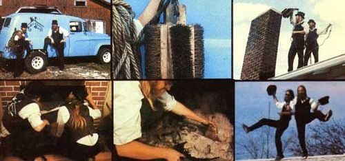

BELOW Richard Riggs and Mickey McMasters--of Hendersonville, North Carolina -- clean chimneys in a far more traditional (and spectacular!) fashion. They have a truck too ... but it's loaded with ladders and other gear that the boys have mostly assembled on their own. One of their main brushes, for instance, is nothing but four heavyweight floor scrubbing brushes fastened to a central block of wood and weights and suspended from a rope. After securely seating off the mouth of the fireplace they're cleaning, Dick and Mickey climb up on the roof and lower one of their brushes down the chimney. The brush Is then pulled up and down until all the gunk in the flue Is knocked loose. The boys then climb down from the roof, enter the house, peel away the paper seal they'd put over the fireplace opening, and sweep up the accumulation of ashes and soot that have fallen from the chimney, And when the job is completed, these chimney sweeps do sometimes dance on the roof!